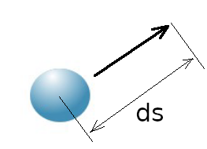
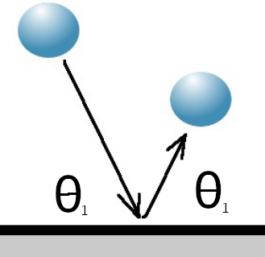
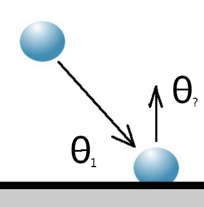
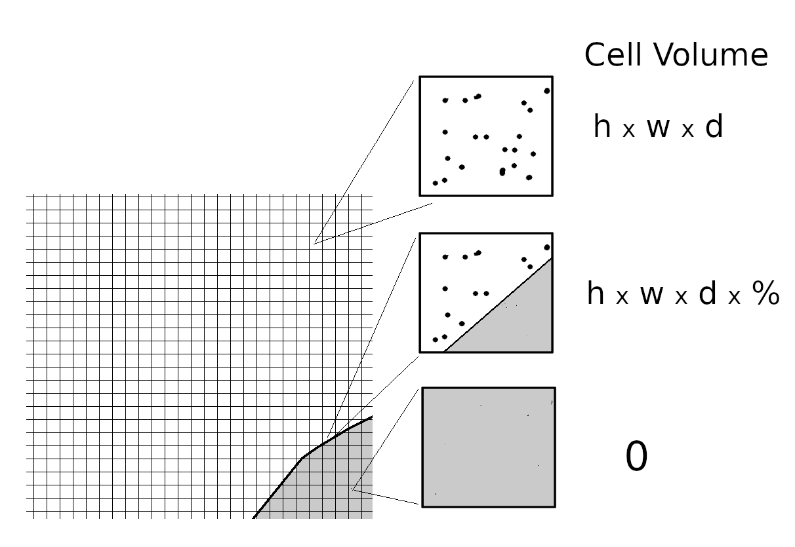
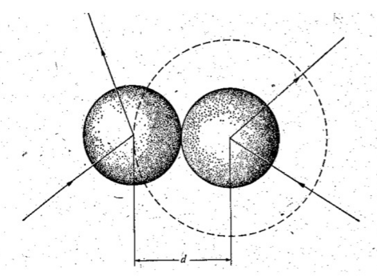
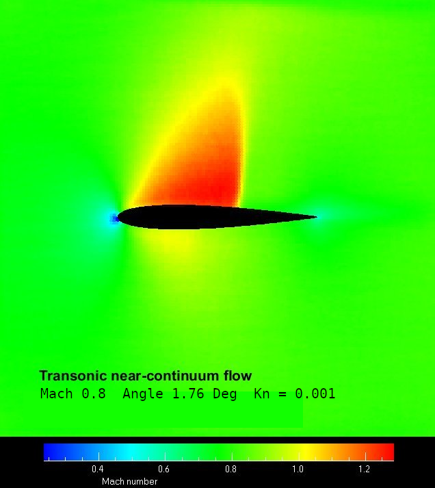
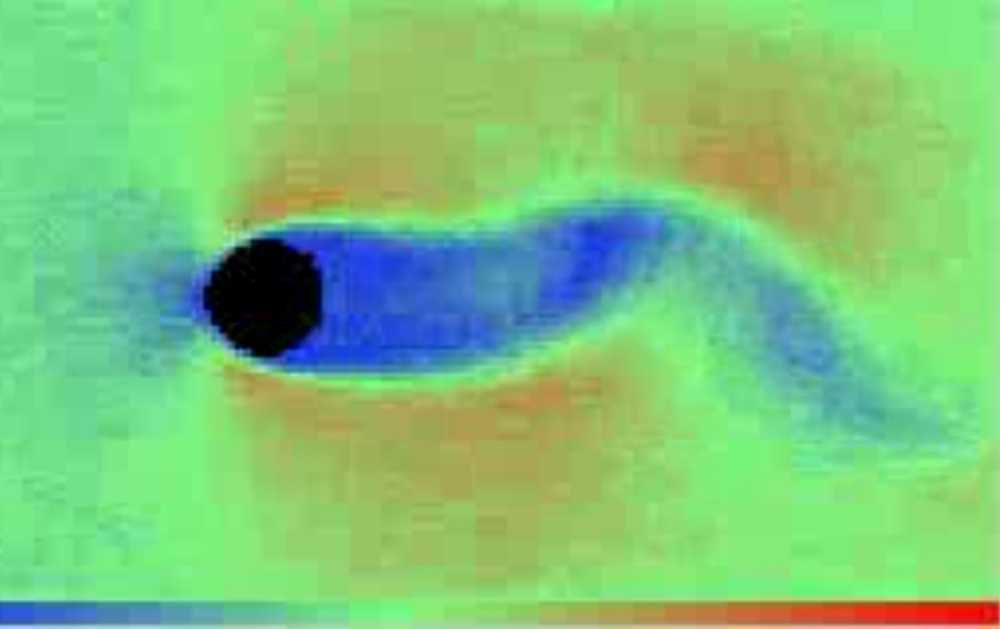
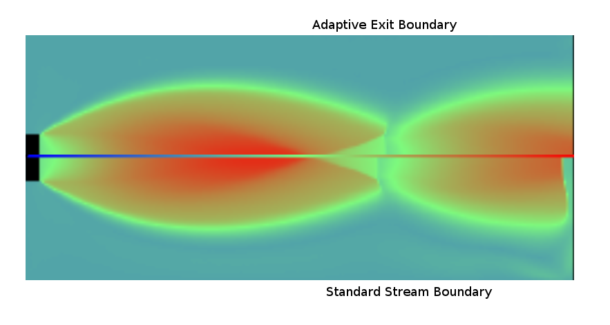

Molecular Simularion of Rarefied Gas Flow
The direct simulation Monte Carlo (or DSMC) method is widely used for the modeling of gas flows through the computation of the motion and collisions of representative molecules. It attempts to provide a numerical simulation of the Boltzmann equation. The technique was pioneered by the late Professor Graeme Bird from the Department of Aeronautical Engineering, University of Sydney. The method was originally used for simulation of rarefied gas flow around rentry vehicles, but has now progressed to the stage of being a useful tool for solving a large range of aerodynamic and aerospace problems.
Computation at the molecular level is necessary for studies in rarefied gas dynamics (or RGD) because the transport terms in the Navier-Stokes equations are not valid in this flow regime. The essential characteristic of a "rarefied" flow is that the molecular mean free path is not negligible. This means that many applications involve normal and high density flows with very small physical dimensions. At sufficiently high density, the DSMC fluctuations can be physically real and the method then goes beyond the mathematical model provided by the Boltzmann equation. In addition, the DSMC method can be employed for the study of chemical reactions for which inverse collisions cannot be defined and the Boltzmann model is inapplicable.
The simulation method progresses in extremely small time steps (approx 10-6 sec) and is divided into a transport phase and an energy redistribution or molecular collision phase. This is valid where the mean free path is large compared to the size of the molecules and the primary interaction between molecules is a two body collision. As there are normally too many real molecules in a volume of gas to permit simulation of every one in a computer, a statistical approach is used by tracking representative molecules. Reasonable results are obtained using 106 or more simulation molecules each one representing up to 1011 to 1014 real molecules.
Transport Phase
The transport phase of the time step involves Lagrangian motion of the simulated molecules and calculation of the interactions with flow boundaries and solid surfaces.

Where the molecule encounters a solid surface during this move, the interaction can be modelled as specular (with perfect conservation of momentum) or diffuse (with perfect conservation of energy).
In some cases the inteaction could be a fraction of both or an interaction with a chemically reacting surface.


Specular Diffuse
Where there are stream boundaries, incoming or outgoing, a specified number of molecules will be introduced at random along the boundary and at random points in the time interval. The number and speed of molecules entering via a stream boundary is predicted using a skewed gaussian distribution based on flow entry or exit speed,
$$Ne = n/{nR}*{Vmp}*A*(e^{-(V_∞/{Vmp})^2}+√{π}*V_∞/{Vmp}*(1+erf(V_∞/{Vmp})))/(2*√{π}) $$ where Ne is number
of molecules entering flow during time step,
n is stream number density
V∞ is the stream average velocity
nR is number of real molecules represented by each simulation molecule
A is the area of the entry surface.
Vmp is the most probable thermal speed of the entering gas
Bz is the Boltzmann constant = 1.3806x10(-23)
T is the stream temperature
and m is the mass of a molecule
Collision Phase
The flow field is sub-divided into small cellular volumes each ideally containing from 8 to 20 simulated molecules. The cells can form a regular or irregular mesh but should be very small relative to the flow field dimensions. “Nearest neighbour” collisions will be simulated using pairs of molecules selected at random from the cell.

The number of collisions over a time step within a cell can be estimated as
$$ {NC} = (N*(N-1)*{nR}*{Vmp}*{Xm})*{Dt}/{Vol}$$ where N is the number of molecules in the cell
Xm is the collision crosssection of the molecule
Vol is the cell volume
and Dt is the time step
Collision pairs are selected at random from the cell and probabilty of collision is calculated,
$$p = {CVR}/{Vol}$$where CVR is the collision volume crosssection for the pair
$$CVR = {Vr} * {Xref} * ((2*Bz*{Tref})/(m/2*{Vr}^2))^(ν-0.5)*1/(Γ(2.5-ν))$$ Xref is the Reference cross-section of molecule at TrefTref is the reference Temperature
Vr is the relative speed of molecules
ν is the viscosity power law coefficient for the molecule.

A selection/rejection process is carried out until the correct number of collisions for the time step has been achieved. Molecules which have already collided are rejected as are molecules with low relative speed.collision
Post Collision velocities are calculated based on either one of the following models
- variable hard sphere
- variable soft sphere
depending on the initial energy of the collision pair. Random scattering of the velocity components is applied in a manner that ensues conservation of momentum and energy for the centroid of the pair. If required rotational and vibrational energy effects, disassociation and chemical reactions can be included in the collision processing.
Flow Properties
Flow properties in each cell can be evaluated after sufficient time steps have occured. This is done by averaging the molecular properties that have been recorded at a cell over a specified length of time.
$$ ρ = { {Σ N} * {nR} * m }/{Vol * Nsamples} $$$$ Vx = {Σ v_x} / {Nsamples} , Vy = {Σ v_y} / {Nsamples} , V = √{{Vx}^2 + {Vy}^2} $$
$$ T = ({Σ v_x^2 + v_y^2 +v_z^2}/ {Σ N} - {V}^2 )*m/{Bz} $$ where σ N is the number of molecules smapled
Nsamples is the number of samples taken over the time period
ρ is the flow density
Vx and Vy are the flow velocity components
V is the flow average velocity
and T is the flow temperature
Surface properties can be calulated by sampliing the momentum transfer from molecules to surface over a specified length of time.
Software
A simple demonstration program is available : dsmc.html
Sample DSMC solutions are shown here
|
 Aerofoil transonic flow |
 Unsteady flow around cylinder |
 Nozzle Exhaust flow |
{kind=link}
{kind=link}